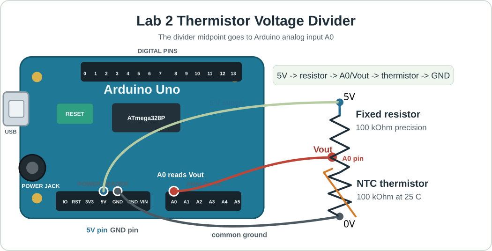

Lab 2 Assignment: First Real Instrument Pieces¶
Purpose¶
In Lab 1 you used the Arduino for digital output, analog input, averaging, and LED PWM. In Lab 2, you reuse those ideas to begin building a real instrument: thermistor temperature measurement, Arduino Serial Plotter output, and trim-pot-controlled PWM signals for the H-bridge.
The actuator side also begins, but cautiously. You will verify H-bridge logic and PWM with the oscilloscope before any TEC power is used.
Theme¶
First Real Instrument Pieces
Thermistor serial data, temperature conversion, Arduino Serial Plotter output, H-bridge logic/PWM verification, and possibly a low-power manual TEC heat/cool test if the instrument passes the safety checks.
Safety Boundary¶
The thermistor circuit is safe to build and test from Arduino USB power.
The TEC power supply remains off until the H-bridge input signals have been checked with the oscilloscope. If the class reaches the TEC stretch goal, use low PWM only and stop immediately if the temperature moves unexpectedly or the hardware becomes warm in the wrong place.
Before Class¶
- Review your Lab 1 assignment notes on
analogRead, averaging, PWM, and oscilloscope duty-cycle measurements. - Read the Arduino Tutorial through the LED brightness section. The official Arduino references for AnalogReadSerial, analogRead, analogWrite, and map will also be useful.
- Read the hardware page sections on the thermistor, H-bridge, and TEC.
- Bring the Arduino, thermistor divider parts, trim pot, USB cable, and your Lab 1 notes.
Pre-Class Questions¶
- A 100 k\(\Omega\) fixed resistor and a 100 k\(\Omega\) thermistor form a voltage divider, wired as described in Part 1: Thermistor Serial Data (below). What voltage do you expect at 15C, at 25C, and at 35C? You need the thermistor data sheet to answer.
- Why is a temperature reading more model-dependent than a voltage reading?
- Describe the H-bridge input signals you expect for each case: PWM = 0, low-power heat, and low-power cool. Which of the two Arduino pins should carry the PWM signal in each case, and what should the other direction pin do?
- What is one advantage of Arduino Serial Plotter compared with Arduino Serial Monitor?
What You Will Do¶
- Build or inspect a thermistor voltage divider.
- Write and upload a thermistor serial sketch.
- Convert ADC counts into voltage, resistance, and temperature.
- Revise the sketch so Arduino Serial Plotter shows temperature versus serial read order.
- Use a trim-pot voltage as a manual input that sets PWM.
- Use a separate digital input or switch to choose heat versus cool.
- Verify H-bridge direction and PWM logic on the oscilloscope.
- Attempt low-power manual TEC heating/cooling only if the instructor approves.
Part 1: Thermistor Serial Data And Temperature Conversion¶
Wire the thermistor divider:
- Arduino
5Vto fixed resistor. - Fixed resistor to Arduino
A0. - Arduino
A0to thermistor. - Thermistor to Arduino
GND.

Open the thermistor-divider diagram full size
{kind=link}
Write a sketch that prints human-readable measurements in Serial Monitor. A good output line looks like this:
time = 1.50 s average ADC = 511.8 voltage = 2.501 V resistance = 100.23 kOhm temperature = 24.9 C samples = 50
Every number should have a label and a unit where appropriate. The goal is for a person looking at Serial Monitor to understand the measurement without memorizing a column order.
Write your own sketch for this measurement. You may ask an AI agent for help, but do not simply upload code that you do not understand. You should be able to explain every calculation and every printed value.
What Your Sketch Should Do¶
Include these functions in your sketch. Build and test them one at a time.
- Constants at the top describe the circuit and thermistor model: Arduino pin
A0, the 5 V reference, the 100 kOhm fixed resistor, the 100 kOhm thermistor value at 25 C, and the beta value. adcToVoltage()converts the Arduino ADC number into a voltage.voltageToResistance()uses the voltage-divider equation to calculate the thermistor resistance.resistanceToCelsius()uses the beta model to convert thermistor resistance into temperature.setup()starts Serial Monitor at9600baud and prints a short heading.loop()waits until it is time for a new report, readsA0many times, averages the readings, calculates voltage, resistance, and temperature, then prints one labeled line.printHumanReadable()controls the exact text you see in Serial Monitor. If you want the output to look different, this is the safest first place to edit.
Hold the thermistor firmly between your index finger and thumb to heat it. Slightly moisten the thermistor to cool it. The reported temperature should move slowly and plausibly. If it jumps wildly, check the wiring, ground, and serial parsing before changing the code.
Part 2: Serial Plotter Output¶
Revise the sketch so each serial line contains only one temperature value. For example:
24.9
25.0
25.2
This format is less friendly for a person reading one line, but it is exactly what Arduino Serial Plotter needs. The plotter will draw temperature versus serial read order, not temperature versus a time value that you provide. Open Serial Plotter and confirm that the graph responds when you hold the thermistor between your fingers or cool it with a slightly moistened finger.
Record:
- the code change you made so each serial line contains only temperature,
- a screenshot or sketch of the Serial Plotter trace,
- whether warming and cooling the thermistor move the plotted temperature in the expected direction.
Lab 2 stays inside the Arduino IDE.
Part 3: Trim Pot To PWM And Heat/Cool Direction¶
In Lab 1, a trim pot produced a variable voltage and the Arduino converted that voltage to an ADC number. Now use the same idea as a manual control input.
Build code with this signal path:
trim-pot voltage -> analogRead average -> map to PWM -> analogWrite -> H-bridge input
Use one analog input for the trim pot, for example A1. The analog input has
10-bit resolution and therefore produces numbers from 0 to 1023. Convert
the averaged trim-pot reading into a PWM output signal. PWM outputs have 8-bit
resolution and therefore values from 0 to 255 are used to control them.
Use a separate digital pin as a heat/cool input, for example pin 11:
| Direction input | Mode | Arduino pin 9 |
Arduino pin 10 |
|---|---|---|---|
5V |
heat | PWM | 0V |
0V |
cool | 0V |
PWM |
This is the logic of H-bridge method 2: the two H-bridge control inputs receive
either the PWM command or 0V, depending on whether you want to heat or cool.
Read the H-bridge hardware notes before wiring
the class board.
Keep the TEC power off for this part. You are verifying the command signals, not heating or cooling yet.
Part 4: Oscilloscope Checkoff: H-Bridge Command Signals¶
Do this with TEC power off.
Use the oscilloscope to inspect the Arduino pins that drive the H-bridge. On the class boards, the PWM pins are expected to be Arduino pins 9 and 10. Verify the actual board wiring before powering anything.
Check:
- which pin is active in heat mode,
- which pin is active in cool mode,
- whether the inactive side stays off,
- whether the PWM duty cycle matches the commanded value,
- whether Arduino ground and oscilloscope ground are common.
Optional Stretch Or Instructor Demo: Low-Power Manual TEC Heat/Cool¶
Only do this after the instructor checks the H-bridge signals.
Start with PWM at zero. Increase slowly to a low value and watch the thermistor trace. Confirm which command heats and which command cools. If the direction is unexpected, set PWM to zero and stop.
What To Submit¶
Submit a short lab note containing:
- Thermistor divider circuit sketch.
- Three human-readable serial lines copied from the Part 1 Arduino output.
- The conversion chain from averaged ADC count to temperature.
- Thermistor constants used in your sketch.
- Serial Plotter screenshot or sketch of temperature versus serial read order.
- Trim-pot-to-PWM code excerpt or signal-path explanation.
- H-bridge signal table for heat and cool commands with TEC power off.
- If attempted: one short heating or cooling trace at low PWM.
- A paragraph answering: What makes this setup an instrument rather than just an Arduino program?